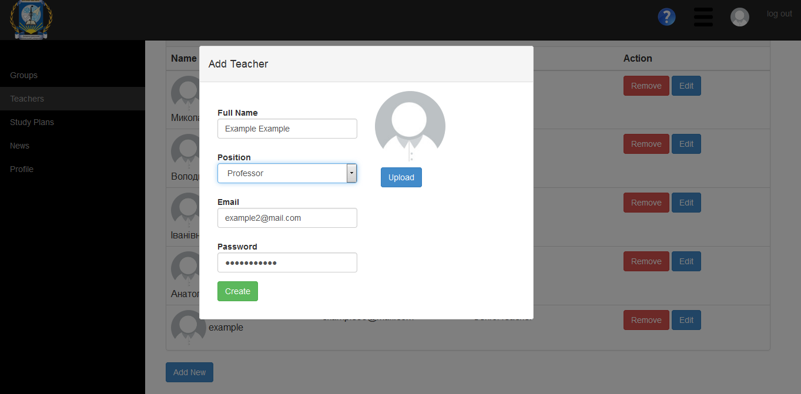

Сторінка перегляду викладачів кафедри
На цій сторінці можна додати/ відредагувати/ видалити інформацію про викладачів, що працюють на кафедрі.
Щоб додати нового викладача натисніть синю кнопку Add New. У відкритій формі заповніть інформацію про викладача, а саме його повне ім’я, посаду, email, а також пароль для входу в систему. Також можна завантажити фото викладача, щоб зберегти зміни натисніть зелену кнопку Create.

Щоб відредагувати інформацію про викладача натисніть синю кнопку Edit навпроти необхідного викладача.
Щоб видалити інформацію про викладача натисніть червону кнопку Remove навпроти необхідного викладача.
Created with the Personal Edition of HelpNDoc: Create HTML Help, DOC, PDF and print manuals from 1 single source